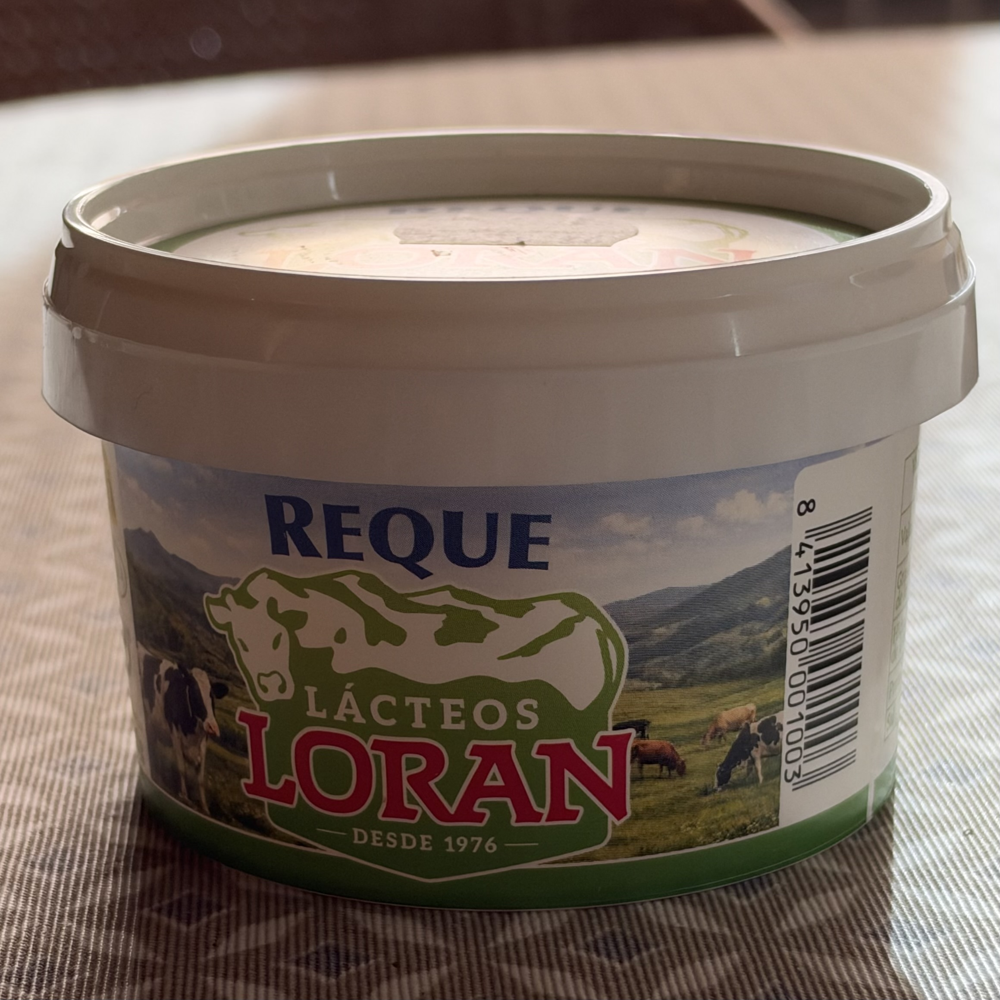
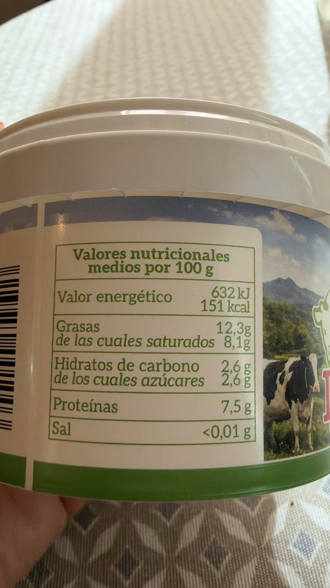
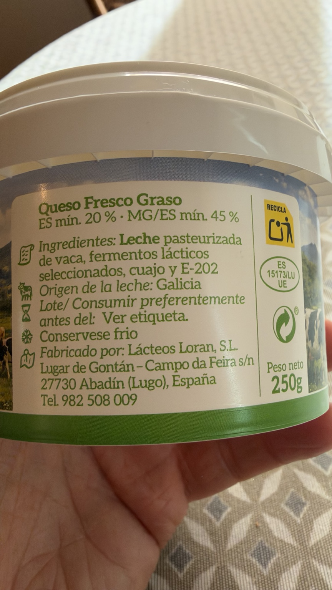

Requesón Reque
Requesón de leche de vaca de Galicia. Denominación de la etiqueta: queso fresco graso.
Peso neto del envase fotografiado: 250 g.
Precio de referencia
Por anotar
Precio del envase · €/kg · Fecha del precio
Ticket de Carrefour Los Rosales · 30/09/2026 · 1,30 €. El ticket indica 125 g, pero el envase fotografiado es de 250 g. El usuario sospecha un error en la descripción de Carrefour; pendiente de comprobar.
Dónde lo compro
Por anotar
Tienda · Enlace al producto
Lo uso en
Por qué lo uso
Me gusta porque está rico y es gallego, un producto de proximidad.
En mi cocina
Lo uso para rellenar las barquitas de endivia, con el aderezo que me apetezca.
Composición
leche pasteurizada de vaca, fermentos lácticos seleccionados, cuajo, E-202.
Alérgenos: leche.
Consérvese frío.
Lácteos Loran, S.L. · Abadín (Lugo), España
Galicia
Valores por 100 g
| Energía | 632 kJ / 151 kcal |
|---|---|
| Grasas | 12,3 g |
| De las cuales saturadas | 8,1 g |
| Hidratos de carbono | 2,6 g |
| De los cuales azúcares | 2,6 g |
| Fibra | No declarada |
| Proteínas | 7,5 g |
| Sal | <0,01 g |

Valoración de Yuka
48 / 100 · Mediocre
Yuka penaliza el conservante E-202 (sorbato de potasio), que clasifica como «De riesgo», y las grasas saturadas. Destaca como positivos las proteínas, el valor energético, el azúcar y la sal. La app muestra 0 g de sal; la etiqueta del envase indica <0,01 g por 100 g.
Aspectos positivos según Yuka
- Proteínas · 7,5 g por 100 g: Algunas proteínas
- Valor energético · 151 kcal por 100 g: Bajo en calorías
- Azúcar · 2,6 g por 100 g: Bajo en azúcar
- Sal · 0 g por 100 g según la app: Sin sal
Aspectos negativos según Yuka
- Aditivos · 1: E-202, sorbato de potasio (conservante): Presencia de aditivos a evitar; clasificado por Yuka como «De riesgo»
- Grasas saturadas · 8,1 g por 100 g: Alto en grasa
Fuente: captura de Yuka aportada el 15/10/2026.
Ingredientes y tabla nutricional del envase

